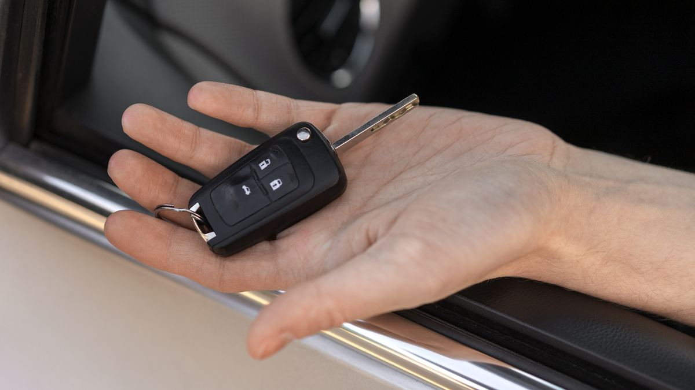
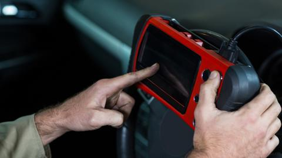

Usługa · Kielce i okolice
Dorabianie i kodowanie kluczyków samochodowych – Kielce, z dojazdem
Dorabianie kluczy samochodowych to dziś coś więcej niż nacięcie metalu: nowy kluczyk trzeba jeszcze zakodować, żeby auto go rozpoznało. Dorabiamy i kodujemy kluczyki oraz piloty, także w wersji keyless, a kluczyki, których już nie masz, usuwamy z pamięci samochodu. Dojeżdżamy na miejsce – w Kielcach i okolicy.

W czym pomożemy
- Zapasowy kluczyk z chipem immobilizera – z grotem naciętym pod Twoje zamki, zakodowany w aucie
- Kluczyki z pilotem centralnego zamka, także składane
- Kluczyki keyless do aut z bezkluczykowym otwieraniem i uruchamianiem
- Ponowne zakodowanie pilota, który przestał otwierać auto
- Nowy kluczyk w miejsce złamanego lub zniszczonego
- Skasowanie z pamięci auta kluczyków, które zginęły albo zostały u poprzedniego właściciela
- Brak jakiegokolwiek kluczyka – nowy egzemplarz bez oryginału
Co przygotować
- Dokument tożsamości i dowód rejestracyjny – porównujemy dane właściciela
- Wszystkie kluczyki do tego auta, które mają dalej działać
- Dane auta do wyceny: VIN, marka, model, rocznik
- Pisemna zgoda firmy lub leasingodawcy, jeśli auto nie należy do Ciebie
Kupiłeś używane auto i nie wiesz, gdzie są pozostałe kluczyki? Podczas kodowania nowego kasujemy z pamięci auta egzemplarze, których nie masz – od tego momentu nie uruchomią silnika.
Jak to wygląda
- 1
Dane auta
Podajesz markę, model, rocznik i VIN, a także to, jaki masz kluczyk: z pilotem czy bez, składany albo keyless.
- 2
Wycena
Mówimy, jaki kluczyk będzie potrzebny i ile to kosztuje. Cenę znasz, zanim zaczniemy.
- 3
Dokumenty i kluczyk
Sprawdzamy dokumenty, przygotowujemy kluczyk i nacinamy grot pod zamki Twojego auta.
- 4
Kodowanie i test
Kodujemy kluczyk w aucie, usuwamy z pamięci zgubione egzemplarze i razem sprawdzamy zamki, pilota oraz uruchamianie silnika.
Dorabianie kluczy samochodowych – jakie kluczyki wykonujemy
Kluczyk do współczesnego auta składa się zwykle z kilku części i to od nich zależy, co trzeba zrobić przy dorabianiu. Najczęściej spotykamy trzy rodzaje:
| Rodzaj kluczyka | Co ma w środku | Co obejmuje dorobienie |
|---|---|---|
| Kluczyk z chipem (transponderem) | metalowy grot i chip bez baterii | nacięcie grota i zakodowanie chipa w aucie |
| Kluczyk z pilotem, także składany | grot, chip i nadajnik zasilany baterią | to samo oraz zakodowanie pilota do centralnego zamka |
| Kluczyk keyless | nadajnik, który auto wykrywa z bliska, zwykle z grotem awaryjnym schowanym w obudowie | zakodowanie w systemie bezkluczykowym i nacięcie grota awaryjnego |
Sama kopia metalowej części, zrobiona w punkcie dorabiania kluczy, pasuje do zamka, ale immobilizer jej nie zaakceptuje – silnik nie ruszy albo zgaśnie po chwili. Jak działa chip i dlaczego auto go „sprawdza”, opisujemy w poradniku o transponderze w kluczyku. Zakres pracy zależy od marki, modelu i rocznika, dlatego po numerze VIN ustalamy, jaki model kluczyka będzie właściwy i czy całą pracę wykonamy na miejscu.
Zapasowy kluczyk – przyjeżdżamy do auta
Kolejny kluczyk najłatwiej przygotować, dopóki masz jeszcze jeden działający. Nie musisz nigdzie jechać: przyjeżdżamy pod dom, pod firmę albo na parking – w mieście i w okolicznych gminach. Kluczyk kodujemy w Twoim aucie, a Ty od razu sprawdzasz, czy otwiera zamki i uruchamia silnik.
W wielu modelach podczas kodowania auto zapisuje na nowo całą listę kluczyków. Egzemplarz, którego nie będzie wtedy na miejscu, może przestać działać – dlatego poprosimy Cię o komplet kluczyków, z których chcesz dalej korzystać. Jeśli któregoś nie masz, to dobry moment, żeby go z pamięci usunąć.
Dlaczego warto mieć drugi kluczyk, zanim pierwszy zginie lub się zepsuje, piszemy w poradniku zapasowy kluczyk do samochodu.
Zgubiony kluczyk? Usuniemy go z pamięci auta
Każdy kluczyk zapisany w pamięci samochodu może go uruchomić – także ten, który zginął, został u poprzedniego właściciela albo u osoby, która kiedyś jeździła tym autem. Przy kodowaniu nowego kluczyka możemy usunąć z pamięci wszystkie egzemplarze, których nie masz przy sobie.
Warto o tym pomyśleć zwłaszcza wtedy, gdy:
- kupiłeś używane auto z jednym kluczykiem i nie wiesz, gdzie jest drugi – zobacz też, na co uważać, kupując auto z jednym kluczykiem;
- kluczyk zginął razem z kluczami do domu albo z dokumentem, na którym jest Twój adres;
- auto firmowe zmienia kierowcę, a jeden z kluczyków nie wrócił.
Gdy nie został żaden kluczyk, postępujemy inaczej – opisujemy to na stronie o utracie wszystkich kluczyków.
Piloty i kluczyki keyless
Pilot, który przestał otwierać auto, nie zawsze wymaga kodowania. Zacznij od nowej baterii – jak to zrobić, nie uszkadzając obudowy, pokazujemy w poradniku o wymianie baterii w kluczyku. Jeśli to nie pomaga, a kluczyk nadal uruchamia silnik, przyczyna może leżeć w samym pilocie albo w jego zapisie w aucie. Wtedy kodujemy go ponownie albo dorabiamy nowy.
Kluczyk keyless porozumiewa się z autem bez wciskania przycisków, więc jego zakodowanie obejmuje system bezkluczykowego otwierania i uruchamiania. To wygodne rozwiązanie, ale wymaga rozsądku przy przechowywaniu kluczyka w domu – sposoby ochrony zebraliśmy w artykule o kradzieży „na walizkę”.
Gdy auto przestało rozpoznawać wszystkie kluczyki naraz, choć wcześniej działały, przyczyna może leżeć w immobilizerze albo sterowniku silnika. Tym również się zajmujemy – zobacz stronę o naprawie sterowników i immobilizerów.
Pytania i odpowiedzi
Ile kosztuje dorobienie kluczyka samochodowego?
Czy dorobicie kluczyk do mojego auta?
Kupiłem kluczyk w internecie. Zakodujecie go?
Ktoś może mieć mój stary kluczyk. Czy uruchomi nim auto?
Czy muszę przyjechać z autem?
ASO czy niezależny specjalista – co wybrać?
Po wymianie baterii pilot nie działa. Co zrobić?
Kluczyki do popularnych marek
Działamy w Kielcach i okolicach
Przydatne porady
 Kluczyki samochodowe
Kluczyki samochodoweZapasowy kluczyk do samochodu – dlaczego warto go mieć
Jeździsz z jednym kluczykiem? Zapasowy kluczyk do samochodu zrobiony na spokojnie to niewielki wydatek w porównaniu z kłopotem, gdy jedyny kluczyk zginie albo się zepsuje.
Czytaj · 4 min Kluczyki samochodowe
Kluczyki samochodowePilot od auta nie działa – najczęstsze przyczyny i co zrobić
Pilot od auta nie działa, a Ty stoisz przy zamkniętym samochodzie? Zanim zaczniesz się martwić, sprawdź kilka prostych rzeczy – wiele usterek rozwiążesz sam w kilka minut.
Czytaj · 4 min
Kluczyki samochodoweKodowanie kluczyka samochodowego – od czego zależy cena i ile to trwa
Pytasz o kodowanie kluczyka i cenę, a słyszysz „to zależy”? Wyjaśniamy, od czego naprawdę zależą koszt i czas pracy – i jakie informacje przygotować, żeby wycena przez telefon była rzetelna.
Czytaj · 4 min Kluczyki samochodowe
Kluczyki samochodoweKluczyk z Allegro lub internetu – czy da się go zaprogramować?
Kluczyk z Allegro kosztuje mniej niż w salonie, ale jego programowanie nie zawsze się udaje. Zobacz, na co zwrócić uwagę przed zakupem, żeby nie zapłacić za część, której nie da się dodać do auta.
Czytaj · 4 min BezpieczeństwoKradzież „na walizkę” – jak chronić auto z systemem keyless
Kradzież „na walizkę” to sposób na auta z systemem keyless, który nie zostawia śladów włamania. Zobacz, jak działa w ogólnym zarysie i co zrobić, żeby Twój samochód nie był łatwym celem.
Czytaj · 4 min Kluczyki samochodowe
Kluczyki samochodoweZgubione kluczyki do auta – co zrobić, gdy nie został żaden?
Zgubione kluczyki do auta, a zapasowego brak? Spokojnie – nowy kluczyk da się przygotować i zaprogramować, a zgubiony usunąć z pamięci samochodu. Podpowiadamy, co zrobić po kolei.
Czytaj · 4 minPotrzebujesz pomocy teraz?
Zadzwoń – powiemy, ile to potrwa i ile będzie kosztować, zanim wyjedziemy.